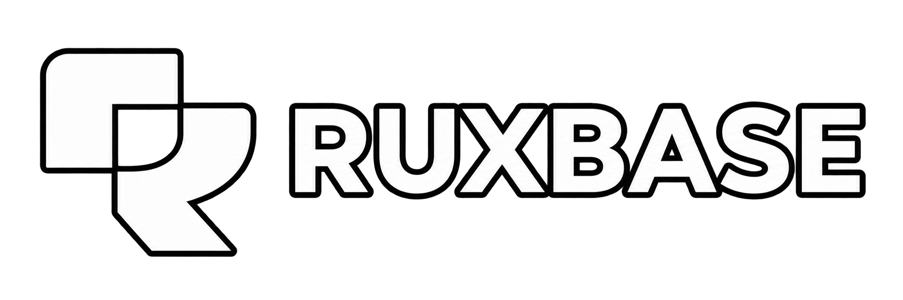
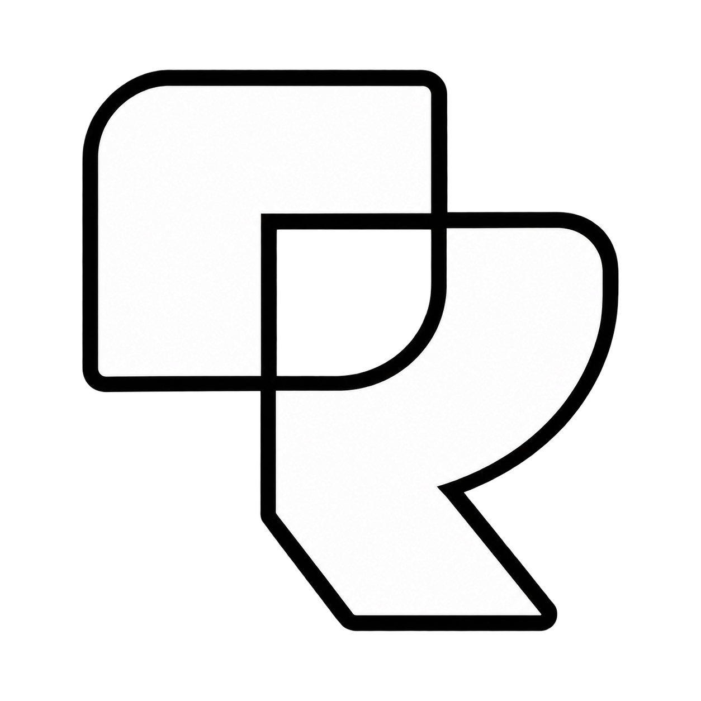
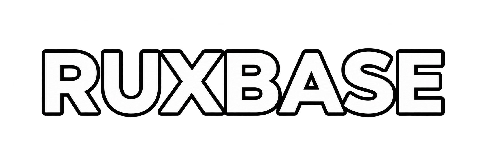

Ruxbase Brand Guidelines
Ruxbase is an open-source, PostgreSQL-native, self-hosted backend platform.
Geometric reconstruction of the approved symbol. Supporting identity specifications are proposed for approval.
01 — Brand identity and design philosophy
Modular geometric lettermark / neo-minimalism. Two geometric modules form an uppercase R, with a central negative-space counter and a diagonal leg. The geometry expresses modular architecture, openness, control and scalability. The visual language is monochromatic, without decorative effects.
02 — Logo variants and lockups
Use the standalone symbol for favicons and app icons, the horizontal lockup for website headers and navigation, and the vertical lockup for larger layouts.
Cross-theme outlined PNG variants
These supplied assets use white fill with black outlines on a transparent background, for both light and dark interfaces. They are raster variants distinct from the monochrome SVG master geometry.






03 — SVG geometry and construction grid
| Property | Value |
|---|---|
| Reference unit U | 100 |
| Symbol bounds | 700 × 780 |
| Icon canvas | 1000 × 1000 |
| Symbol offset within canvas | (150, 110) |
| First module bounds | 400 × 430 |
| Counter bounding box | 200 × 210 |
| Module contact points | (400, 220) / (200, 430) |
| Corner radii (upper-left, upper-right, middle-left, lower-left) | 75 / 30 / 50 / 75 |
| Diagonal leg | (380, 530) → (610, 780) / 47.4° |
| Curve types | Cubic Bézier + circular arcs |
Vertical lockup: symbol width 700 units, wordmark width 790 units and vertical gap 120 units. Horizontal lockup: symbol height 280 units, wordmark width 711 units and separation approximately 74 units. These dimensions refer to the reconstructed SVG assets.
SVG construction grid · Master symbol SVG. The master was reconstructed from the approved raster, not an original source vector.


04 — Clear space and minimum sizes
Maintain minimum clear space of 1U = 100 units (12.82% of the symbol height) around the visible symbol bounds. For complete lockups, scale U proportionally with the symbol.
| Asset | Digital | |
|---|---|---|
| Standalone symbol | 24 px high | 8 mm high |
| Horizontal lockup | 120 px wide | 30 mm wide |
| Vertical lockup | 100 px wide | 25 mm wide |
| Dedicated favicon | 16 px | Not applicable |
Use the dedicated 16 px favicon and verify legibility in context.
05 — Color palette
#000000#FFFFFF#F5F5F5#737373The master symbol uses black or white only. Gray colors are proposed UI neutrals, not additional logo colors. Keep semantic UI state colors separate from the brand identity.
06 — Typography and brand naming
Inter Display Bold (700) for the reconstructed vector wordmark, Inter for English interfaces (weights 400–700), and Noto Sans Arabic for Arabic interfaces. Use RUXBASE in the official wordmark and Ruxbase in running text. The original image's typeface is unknown; the reconstructed wordmark is a close approximation, not an exact typeface match.
Illustrative typography sample, not an approved marketing tagline.
07 — Logo usage rules
Do
- Preserve proportions, module contact points and negative space.
- Use the inverse symbol on dark backgrounds, or use the supplied outlined PNG variants for cross-theme use.
- Test sizes on target screens before release.
Do not
- Add custom outlines, gradients, shadows or glows to master artwork.
- Change corners or the diagonal leg.
- Stretch, rotate or place the logo on low-contrast backgrounds.
The supplied white-fill, black-outline PNG assets are a separate variant, not permission to modify the vector master.
08 — Brand asset inventory
The vector master kit contains eight logo SVGs (tight symbol, square icon, vertical and horizontal lockups in black and white), two 1024 px PNG icons, four favicon images and the construction grid in SVG and PNG formats. Logo assets have transparent backgrounds; vector lockup wordmarks are outlined paths. Three additional outlined PNGs are supplied for cross-theme use.
| File | Asset type | Format and treatment |
|---|---|---|
ruxbase.png | Horizontal lockup | White fill, black outline; transparent PNG |
ruxbase_logo.png | Standalone symbol | White fill, black outline; transparent PNG |
ruxbase_name.png | Standalone wordmark | White fill, black outline; transparent PNG |
ruxbase-symbol-black.svg | symbol — black | Transparent vector master |
ruxbase-symbol-white.svg | symbol — white | Transparent vector master |
ruxbase-icon-black.svg | icon — black | Transparent vector master |
ruxbase-icon-white.svg | icon — white | Transparent vector master |
ruxbase-stacked-black.svg | stacked — black | Transparent vector master |
ruxbase-stacked-white.svg | stacked — white | Transparent vector master |
ruxbase-horizontal-black.svg | horizontal — black | Transparent vector master |
ruxbase-horizontal-white.svg | horizontal — white | Transparent vector master |
ruxbase-icon-black.png | Square icon — black | 1024 px transparent PNG |
ruxbase-icon-white.png | Square icon — white | 1024 px transparent PNG |
favicon-16.png | Favicon 16 px | PNG |
favicon-24.png | Favicon 24 px | PNG |
favicon-32.png | Favicon 32 px | PNG |
favicon-48.png | Favicon 48 px | PNG |
ruxbase-construction-grid.svg | Construction grid | SVG diagram |
ruxbase-construction-grid.png | Construction grid | PNG diagram |


Design references: Apple HIG / App icons; IBM Design Language / 8-Bar. Only principles of simplicity and clear space were used, not the reference logo shapes.